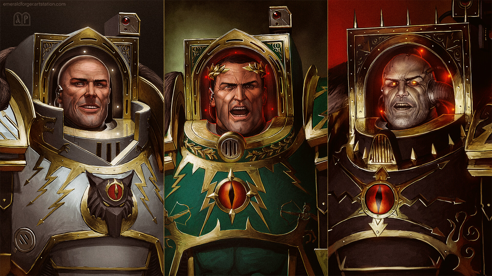
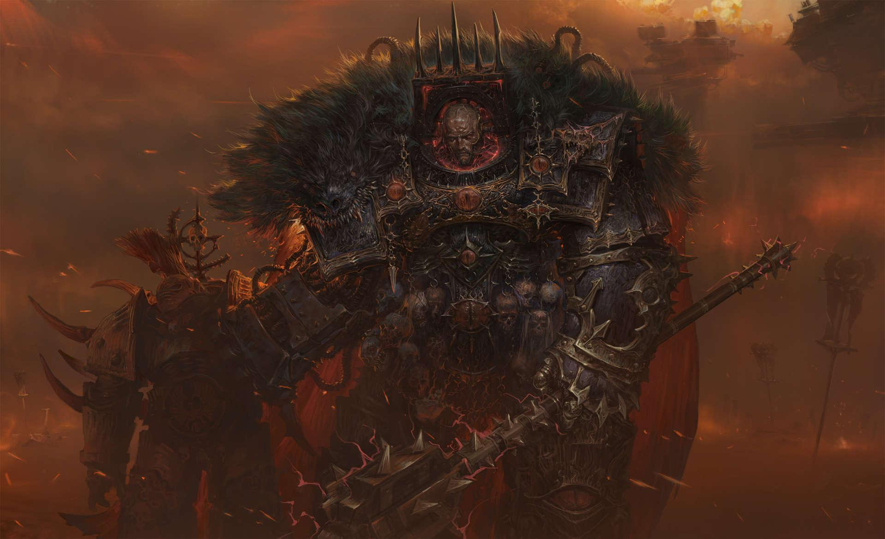
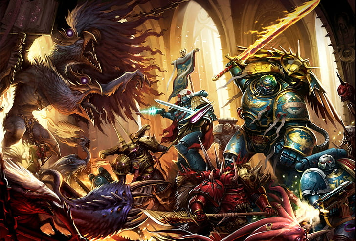

History of the Horus Heresy
The Horus Heresy marks one of the darkest and most catastrophic periods in the history of the Warhammer 40k universe. It was a galactic civil war that saw the very heart of the Imperium shattered by betrayal. At the center of this conflict was Horus Lupercal, the Emperor's most trusted and beloved son, and the Warmaster of the Great Crusade🔗, tasked with uniting the galaxy under the banner of humanity. The seeds of rebellion were sown when Horus was corrupted by the Chaos Gods during a campaign on the planet Davin. They manipulated his pride and ambition, turning him against his father, the The Emperor of Mankind🔗. What followed was a brutal war as Horus, along with nine other Primarchs and their legions, fell to the lure of Chaos and declared their rebellion against the Imperium🔗. This schism divided the galaxy, with brothers fighting brothers in a conflict that would reshape the fate of mankind forever.
The Betrayal of Horus
Once considered the most loyal of the Emperor's sons, Horus's fall from grace is regarded as the greatest betrayal in human history. Initially, the Emperor had granted him the title of Warmaster, making him the supreme commander of all the Legiones Astartes🔗. However, the weight of this responsibility, coupled with the poisonous whispers of the Chaos Gods, gradually eroded Horus's loyalty. His betrayal began in secret, with subtle manipulations of other Primarchs🔗 and legions. As Horus succumbed to the powers of Chaos, he forged alliances with the traitor legions, convincing them to rise up against the Emperor. When his treachery became public, it plunged the galaxy into civil war, known as the Horus Heresy. Loyalist legions led by the Emperor’s faithful sons clashed with the traitors in a war that consumed countless worlds.
The Battle at the Imperial Palace
The Horus Heresy reached its dramatic climax in the Siege of Terra🔗, where Horus and his forces launched a direct assault on the Imperial Palace🔗 on Earth. After seven years of brutal warfare across the galaxy, the traitor legions closed in on the Throneworld, and the final battle for humanity's future unfolded. The traitor legions unleashed unimaginable destruction, but the Imperial forces stood firm. After weeks of relentless fighting, Horus took a bold risk. He lowered the shields of his battle barge, daring the Emperor to face him in single combat. The Emperor, alongside his loyal sons and the Custodian Guard🔗, teleported aboard Horus's flagship, the Vengeful Spirit, for a final confrontation. In a tragic and devastating duel, the Emperor, gravely wounded, ultimately struck down Horus. However, the cost was immense. The Emperor’s mortal body was shattered, leaving him bound to the Golden Throne🔗, where he would remain for eternity to guide humanity. The galaxy, once united under the Emperor’s vision, was left in ruins, forever scarred by the Horus Heresy. The echoes of this betrayal and the war that followed still shape the Imperium 10,000 years later.
Want to learn more?
- ✔ The Rise of Horus
- ✔ The Astartes Legions
- ✔ The Role of the Chaos Gods
- ✔ The Betrayal at the Council of Nikaea
- ✔ The Final Battle on Terra
Explore more about the Primarchs, the Legions, and the impact of the Heresy on the Imperium...
Visit the official Warhammer website